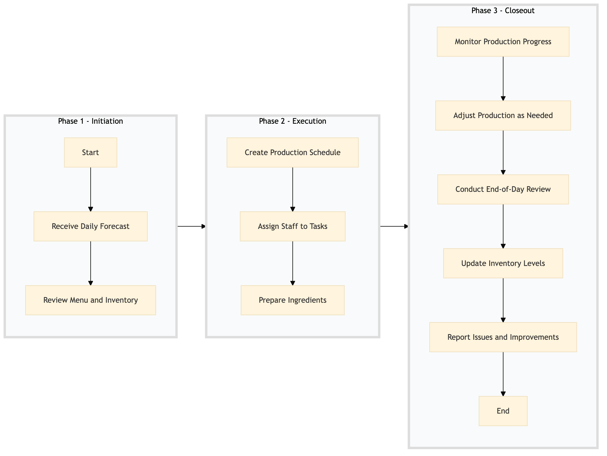

| Role | Steps |
|---|---|
| Executive Chef | 1.1 1.2 2.1 2.3 3.1 3.2 3.4 |
| Kitchen Manager | 2.2 3.1 3.2 3.3 |
| Kitchen Staff | 2.3 3.4 |
| Step | Name | Role | System | Input | Output | KPI | Dec? | Exc? | Pain Point / Risk |
|---|---|---|---|---|---|---|---|---|---|
| 1.1 | Receive Daily Forecast | Executive Chef | Oracle OPERA Cloud | Daily forecast data | Updated production plan | Less than 30 minutes to update the plan | N | Y | Inaccurate forecasts leading to over or underproduction. |
| 1.2 | Review Menu and Inventory | Executive Chef | Oracle OPERA Cloud, Birchstreet Procurement | Menu items, inventory levels | Inventory check report | Less than 1 hour to review | N | Y | Running out of key ingredients affecting menu availability. |
| 2.1 | Create Production Schedule | Executive Chef | Oracle OPERA Cloud, Oracle MICROS Simphony | Forecast data, inventory report | Production schedule | Less than 2 hours to create | N | Y | Complex scheduling leading to staff burnout. |
| 2.2 | Assign Staff to Tasks | Kitchen Manager | Oracle OPERA Cloud, Oracle MICROS Simphony | Production schedule | Staff assignment list | Less than 1 hour to assign | N | Y | Inadequate staffing leading to operational delays. |
| 2.3 | Prepare Ingredients | Kitchen Staff | Oracle MICROS Simphony | Production schedule, staff assignment list | Prepared ingredients | Less than 4 hours to prepare | N | Y | Ingredient preparation delays affecting service speed. |
| 3.1 | Monitor Production Progress | Kitchen Manager | Oracle MICROS Simphony, Oracle OPERA Cloud | Production schedule, prepared ingredients | Production status report | Less than 30 minutes to monitor | Y | N | Lack of real-time monitoring leading to production bottlenecks. |
| 3.2 | Adjust Production as Needed | Executive Chef, Kitchen Manager | Oracle MICROS Simphony, Oracle OPERA Cloud | Production status report | Adjusted production plan | Less than 1 hour to adjust | Y | N | Inability to adapt quickly leading to food waste or service delays. |
| 3.3 | Conduct End-of-Day Review | Executive Chef, Kitchen Manager | Oracle OPERA Cloud, Oracle MICROS Simphony | Production status report, adjusted production plan | End-of-day review report | Less than 1 hour to review | N | Y | Insufficient review leading to continuous operational issues. |
| 3.4 | Update Inventory Levels | Kitchen Staff, Executive Chef | Oracle OPERA Cloud, Birchstreet Procurement | End-of-day review report | Updated inventory levels | Less than 30 minutes to update | N | Y | Outdated inventory levels affecting future production planning. |
| 3.5 | Report Issues and Improvements | Executive Chef, Kitchen Manager | Oracle OPERA Cloud, Oracle MICROS Simphony | End-of-day review report | Issue and improvement report | Less than 1 hour to report | N | Y | Lack of reporting leading to unresolved operational challenges. |
The Kitchen Production Planning process at a Marriott full-service hotel involves forecasting demand, creating production schedules, and ensuring efficient kitchen operations to meet guest expectations.